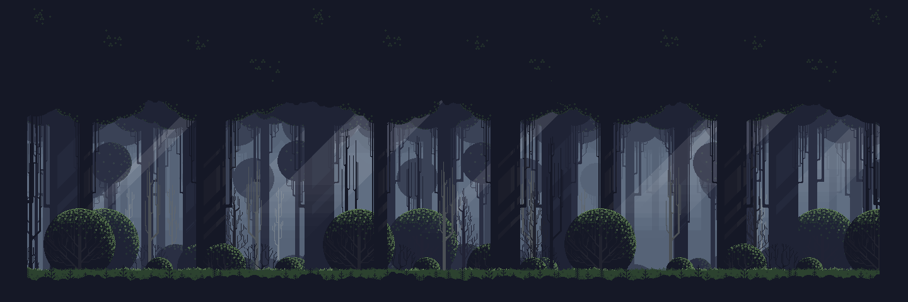

Spiritual Mask
Liza Black
Uma garota gentil, alegre e inteligente que esconde uma grande tristeza, sua máscara é uma kitsune contendo habilidades de chamas azuis e uma transformação com um total de nove caudas.
Darius Kaminari
O samurai responsável por aniquilar a família de Liza Black, também um dos líderes mais fortes e estrategistas de todas as famílias, o mesmo se apossou de uma máscara maligna que estava selada no templo de sua casa.
Violet Vermillion
Após seu pai vir a falecer, como filha única ela teve de herdar a posição de líder da família vermillion, a mesma também está disposta a acabar com esta guerra, com medo de ser derrotada ela se apossou de uma máscara maligna.
Takeda Yoshinori
Um ex-guerreiro da família yamamoto que ao cair em uma ravina durante uma batalha, encontra um templo selado, o mesmo resolve romper o selo e se apossar de uma máscara maligna, ele então ganha um grande poder e mata o líder da família yamamoto, assim assumindo seu posto.